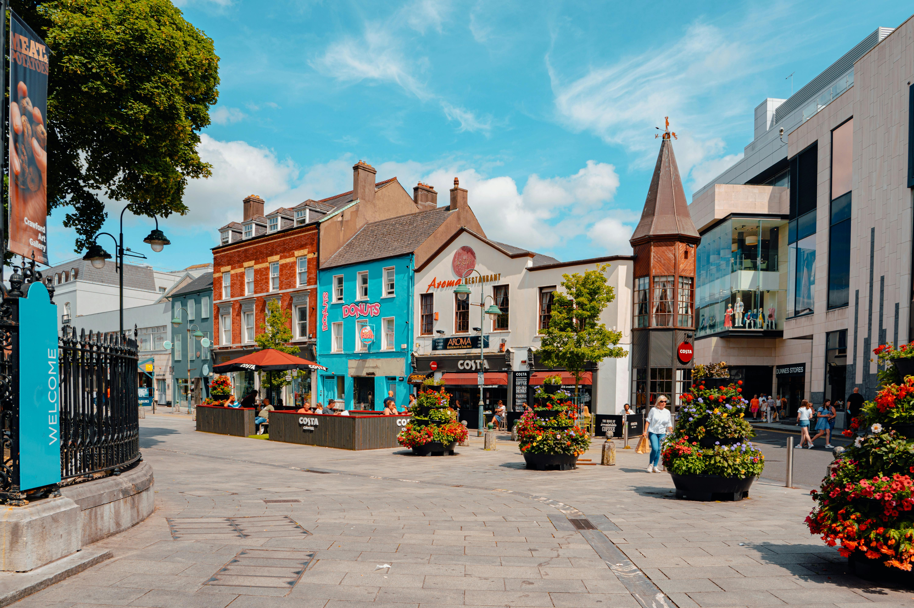
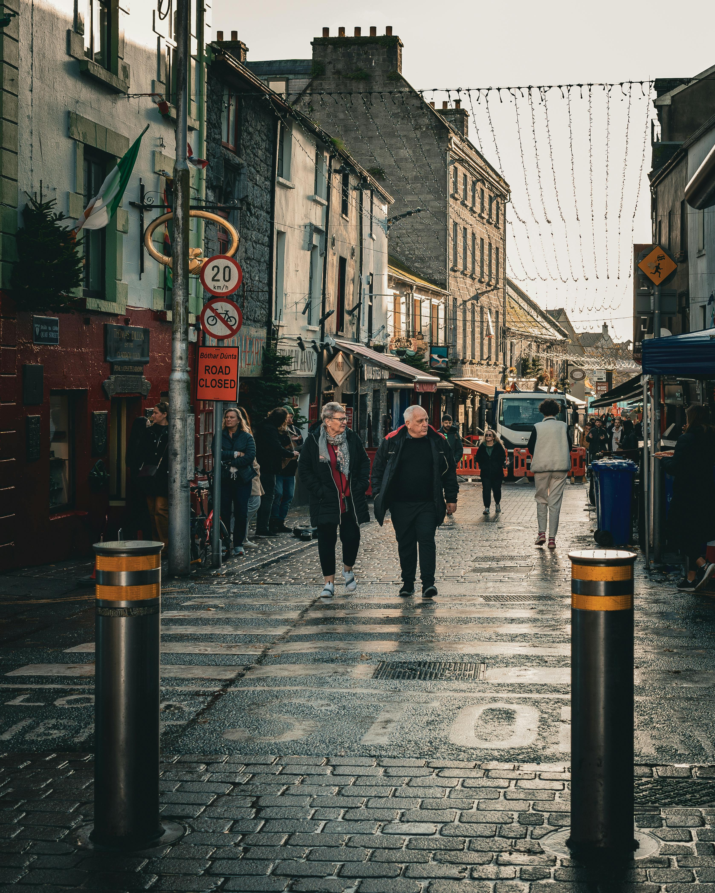
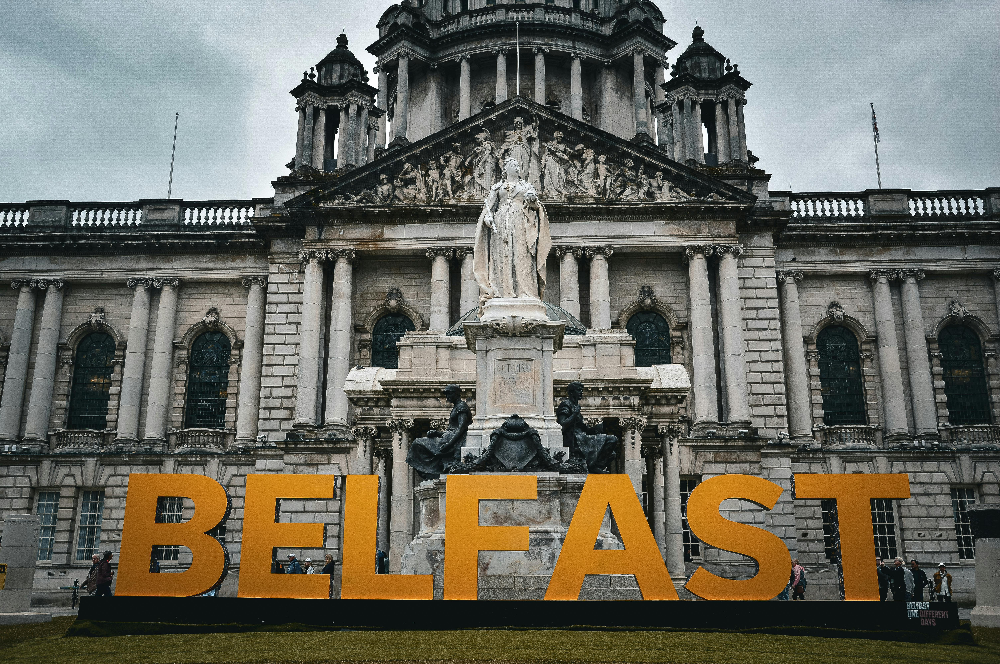

Dublin - Baile Átha Cliath
Dublin is the capital city of Ireland and is located in the province of Leinster. It is known for its rich history, vibrant culture, and lively nightlife. Must visit locations include Trinity College, the Guinness Storehouse, and Dublin Castle.

Cork - Corcaigh
Cork is one of Ireland's major cities, located in the South in the province of Munster. It is known for its maritime history, vibrant arts scene, and culinary delights. Notable sites include the English Market, St. Finbarr's Cathedral, and the Cork City Gaol.

Galway - Gaillimh
Galway, located in Connacht in the heart of the Wild Atlantic Way is a city known for its student nightlife, traditional Irish music, and lively festivals. Key attractions include the Spanish Arch, Eyre Square, and the Galway Cathedral.

Belfast - Beil Feirste
Belfast is located in the province of Ulster. It is known for its rich industrial heritage, large shopping scene and its historical significance. Key attractions include the Titanic Belfast museum, the Ulster Museum, and the historic Crumlin Road Gaol.